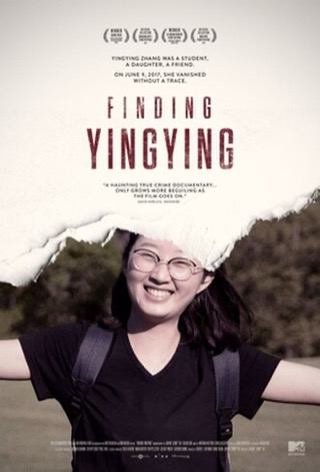

About the film
Yingying Zhang, a 26-year-old aspiring young scientist and graduate student came to the U.S. full of optimism, with dreams of marrying her long-time boyfriend and starting a family. Within weeks of her arrival, Yingying disappears from campus without a trace. Through exclusive access to Yingying’s family and boyfriend,
Finding Yingying
closely follows their search to unravel the mystery of her disappearance. A pre-recorded, post screening discussion with filmmaker Jiayan "Jenny" Shi and producers Brent E. Huffman and Diane Quon, moderated by Mark Greenblatt, will be available in addition to the film.